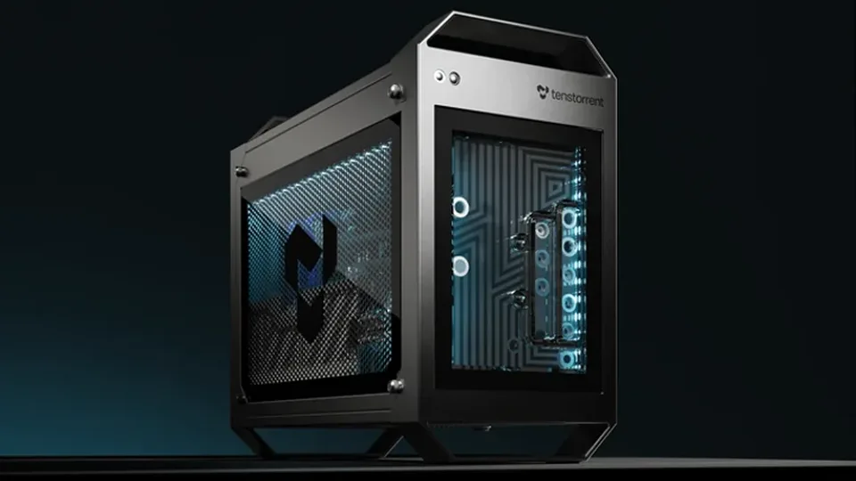

Tenstorrent raises $1.5B at $6.2B valuation: Jim Keller's RISC-V bet against Nvidia scales up
- Who: Tenstorrent, the Toronto-based AI chip company led by CEO Jim Keller (formerly of Tesla, Apple, AMD); lead investors Trace Capital and Innovation X.
- What: $1.5B Series E funding round at a $6.2B post-money valuation.
- When: announced October 19, 2026.
- Other investors: ARK Invest, Fidelity Management & Research, Morgan Stanley, T. Rowe Price, Sandisk, Tether Investments, Protagonist, Eclipse, Virtu Financial, XTX Markets, and others.
- Use of funds: deploy Galaxy servers at scale, serve open-weight models across LLMs and video generation, and advance the AI and CPU IP it licenses to customers designing their own silicon.
- Context: last round in December 2024 raised more than $693M at a $2B pre-money valuation, led by Samsung Securities and AFW Partners.
Tenstorrent, the AI chip company led by legendary processor architect Jim Keller, has closed a $1.5 billion Series E at a $6.2 billion post-money valuation, the company announced on October 19, 2026. The round, jointly led by Trace Capital and Innovation X, more than triples the company's valuation from December 2024 — and is the largest private bet yet that the AI compute stack can be built on something other than Nvidia.
Tenstorrent said it will use the capital to deploy its Galaxy servers at scale, continue serving open-weight models across large language models and video generation, and advance the AI and CPU IP it licenses to customers designing their own silicon. The bet is architectural as much as financial: every product Tenstorrent sells runs on the open-standard RISC-V instruction set, which lets companies design processors without license fees and reduces dependence on proprietary ecosystems like Arm's.
The round
Alongside Trace Capital and Innovation X, the round drew new and existing investors including Agostinelli Group, ARK Invest, Brett Barna, Cadence Ventures, Eclipse, Fidelity Management & Research Company, Maverick Silicon, Morgan Stanley, Protagonist, Sandisk, T. Rowe Price, Tether Investments, Troluce Capital, Virtu Financial, and XTX Markets, according to the company announcement. That is a notably eclectic list — ARK Invest and Tether alongside Morgan Stanley and Fidelity — and it signals that the "open compute" pitch is playing to both the crypto-adjacent crowd and Wall Street.
"We built one architecture and sell it at every size," said CEO Jim Keller. "The future of compute is open, scalable, and owned by the people building on it. Our investors believe in that model too, and we appreciate their support." Trace Capital founder Ben Mahdavi called out the team's track record: "Jim and his team bring decades of hands-on silicon, software, and IP experience, and we're excited to partner with Tenstorrent as Galaxy continues to scale."
Where the money goes
The top priority is scaling Galaxy servers — enterprise-class systems that combine dozens of Tenstorrent's AI chips and can be linked into superclusters for training and running frontier models. Tenstorrent says Galaxy servers are already being used by companies such as Virtu Financial for on-premises AI trading agents, while data center colocation provider Equinix makes them available to enterprises.
That "sell it at every size" line is the whole product strategy. Tenstorrent's lineup now runs from Blackhole cards for laptops to TT-QuietBox workstations to racks and superclusters, plus custom IP licensing — and all of it shares the same Tensix Neo accelerator and Ascalon CPU architecture. With an open-source software stack, the company says developers can run frontier models locally and enterprises can deploy models on-prem at industry-leading latency and throughput.

The RISC-V bet
Tenstorrent's pitch is that the AI chip duopoly — Nvidia's CUDA wall and the Arm licensing treadmill — is a bug, not a feature. RISC-V's open ISA removes the license fee from every design, and Tenstorrent pairs it with a software stack it keeps open source, betting that developers will take the path of least resistance if the performance is there. Protagonist co-founder George Bousis, who says his firm is doubling down in this round, claims "Few companies design the chip and the software that runs on it. Tenstorrent does both, and its video generation results beat industry benchmarks ahead of our expectations."
That claim is doing a lot of work — and as with every vendor benchmark, independent verification matters more than the announcement. But the company is no longer just a chip designer's paper idea: it has shipping hardware, paying customers, and an investor bench deep enough to fund a manufacturing scale-up.
Why this matters
The valuation arc tells the story. In December 2024, Tenstorrent raised more than $693 million at a $2 billion pre-money valuation, led by Samsung Securities and AFW Partners, per Reuters. Less than two years later, the price of the open-compute bet has roughly tripled — and the buyers include Fidelity and Morgan Stanley, not just venture tourists.
Keller's résumé is part of the premium: he previously led Tesla's self-driving chip effort and held key design roles at Apple and AMD. Whether Tenstorrent can turn a $6.2 billion valuation into real datacenter share against Nvidia's gravitational pull is the open question. But after today, nobody can say the challenger is underfunded.
Frequently asked questions
How much did Tenstorrent raise, and from whom?
Tenstorrent closed a $1.5 billion Series E at a $6.2 billion post-money valuation on October 19, 2026. The round was jointly led by Trace Capital and Innovation X, with participation from investors including ARK Invest, Fidelity Management & Research, Morgan Stanley, T. Rowe Price, Sandisk, Tether Investments, Protagonist, and Virtu Financial.
What will Tenstorrent do with the money?
The company says it will deploy its Galaxy servers at scale, continue serving open-weight models across large language models and video generation, and advance the AI and CPU IP it licenses to customers designing their own silicon.
Why is Tenstorrent betting on RISC-V?
Tenstorrent's entire product line — from Blackhole laptop cards to Galaxy server superclusters — is built on the open-standard RISC-V instruction set, which lets companies design processors without license fees and reduces dependence on proprietary ecosystems such as Arm's. CEO Jim Keller's pitch is “one architecture” sold “at every size”, paired with an open-source software stack.